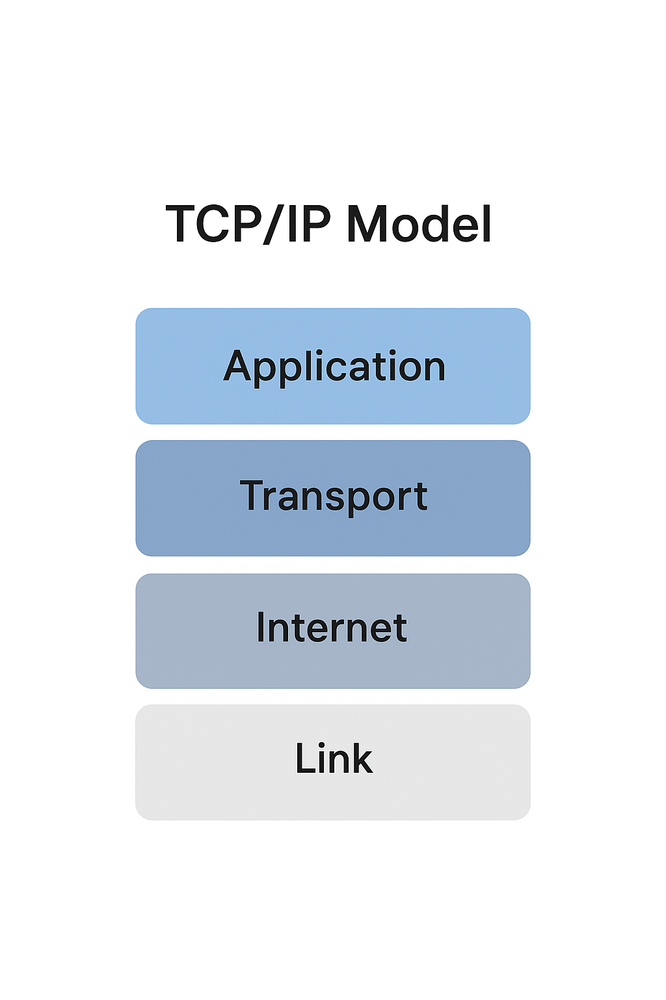

Уровни модели TCP/IP
Что включает TCP/IP
TCP/IP — это стек протоколов, где каждый отвечает за свою задачу.
Протокол |
Назначение |
IP (Internet Protocol) |
Маршрутизация между устройствами |
TCP (Transmission Control Protocol) |
Отвечает за надежную передачу данных |
UDP (User Datagram Protocol) |
Быстрая, но менее надежная передача |
ICMP (Internet Control Message Protocol) |
Проверка соединения |
DNS (Domain Name System) |
Преобразует имена сайтов в IP-адреса |
HTTP/HTTPS, FTP, SMTP, SSH |
Прикладные протоколы |
TCP/IP имеет всего 4 уровня в отличие от модели OSI.
Канальный (Link Layer) — обеспечивает передачу данных внутри одной сети, используются протоколы Ethernet, Wi-Fi, PPP.
Интернет (Internet Layer) — отвечает за маршрутизацию и IP-адресацию.
Транспортный (Transport Layer) — контролирует доставку пакетов (TCP, UDP).
Прикладной (Application Layer) — сервисы для пользователя и приложений (HTTP, FTP, SMTP, DNS, SSH).
Принцип работы TCP/IP
Данные разбиваются на пакеты.
Браузер не отправляет всю страницу целиком при открытии сайта. Он делит данные на небольшие части (пакеты).
Каждый пакет получает адрес (IP).
В пакете записано, куда он должен попасть (IP-адрес сервера) и откуда пришел (IP отправителя).
TCP следит за порядком и целостностью.
Если какой-то пакет потерялся, TCP запрашивает его повторно. Потом собирает все пакеты в правильном порядке.
IP обеспечивает доставку по маршруту.
IP определяет путь через маршрутизаторы и сети до конечного узла.
На приемной стороне пакеты собираются обратно.
Когда все фрагменты доходят до получателя, они восстанавливаются в исходное сообщение.